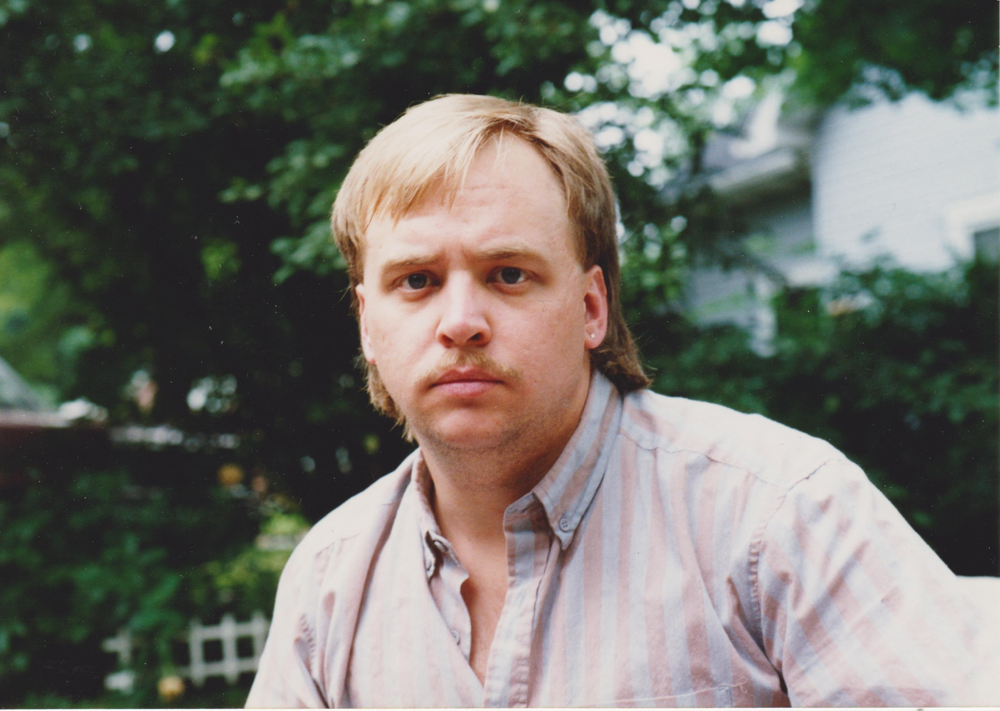
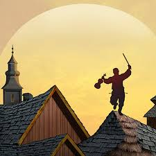

My father, Mark Mellencamp, some time in the early 90s.
Below is an unordered list of random information and memories I have about my dad. These can be stories I remember about him, his qualities from my perspective, or my memories with him (more may be added through time):
- Mark Mellencamp was born February 14, 1961 in Franklin, IN. He was raised in Greenwood, IN where he then raised his own family.
- As a young man, Mark played the clarinet for the school band. He wanted to play the drums, but his father forced him to play clarinet.
- He eventually played the tuba, and won three state championships with the Greenwood Marching Woodmen
- Continuing his progress as a musician, he self-taught piano and would play with his friends throughout his twenties. Some recordings exist of these times. He prefered not to sing on most recordings but instead play the piano.
- I have some of these original scores stored in my head. When I was a child, my father would play these songs for us on his Yamaha keyboard as we went to sleep.
- Two songs that he would often play that were not his own: Pretzel Logic by Steely Dan (one of his favorite bands) and send in the Clowns.
- Speaking of favorite music, he had an extensive CD collection. Some of his favorite artists included Frank Zappa and Pink Floyd, of which he had nearly entire catalogues. Zappa had thirty-something releases, I don't think every one was represented in this physical collection.
- Later on, he produced beats and mixed tracks for a rap duo from my high school. His producer name was M2.
- Played Tevia in Fiddler on the Roof at a Greenwood Community High School production:

His performance blew the crowd away.
- He drove a yellow Camaro Z28 in his late twenties.
- After I was born, my father got a degree at IUPUI in computer science.
- He became the 36th employee of Interactive Intelligence, a softwarte company started in Indianapolis.
- Starting as a helpdesk technician, he self-taught both Java and C++, eventually becoming a senior software engineer. He had nearly 20 years with this company, supporting his family.
- He fostered an environment in the home that was welcome to all. Our house was the place to be. Anyone had free reign to raid the pantry and refridgerator.
- I have had multiple friends express to me that my father was in ways more present for them than their own fathers. He would always lend an ear and gentle, intelligent wisdom.
- Mark passed away December 10, 2015 at 4:00 am alongside his family.
To view Mark Mellencamp's obituary, please click here.